Get started
Install
You need a Mac with Apple Silicon. Each release lists the macOS version it needs; version 0.5.1 needs macOS 27 or later.
Download the latest
FortiBreak-X.Y.Z.zipfrom the Releases page.Unzip it and move FortiBreak.app to your Applications folder.
Clear the download quarantine once. FortiBreak isn’t notarized by Apple, so macOS refuses to open it until you run this in Terminal:
xattr -dr com.apple.quarantine /Applications/FortiBreak.appOpen FortiBreak and enable the VPN helper. Click Enable… in the Enable the VPN helper banner. macOS asks for an administrator password once. FortiBreak never sees or stores that password.
Disconnect FortiClient before you connect with FortiBreak. FortiClient can stay installed; FortiBreak never changes it.
Updating
Replace FortiBreak.app with the new version and clear the quarantine again. The first time you open a new build, the banner reads Approve the VPN helper for this version. Click Approve… and enter your password. Your connections and saved passwords stay as they are.
Add a connection
With no connections yet, FortiBreak opens on a welcome screen with three ways to start. Importing never starts a VPN connection.
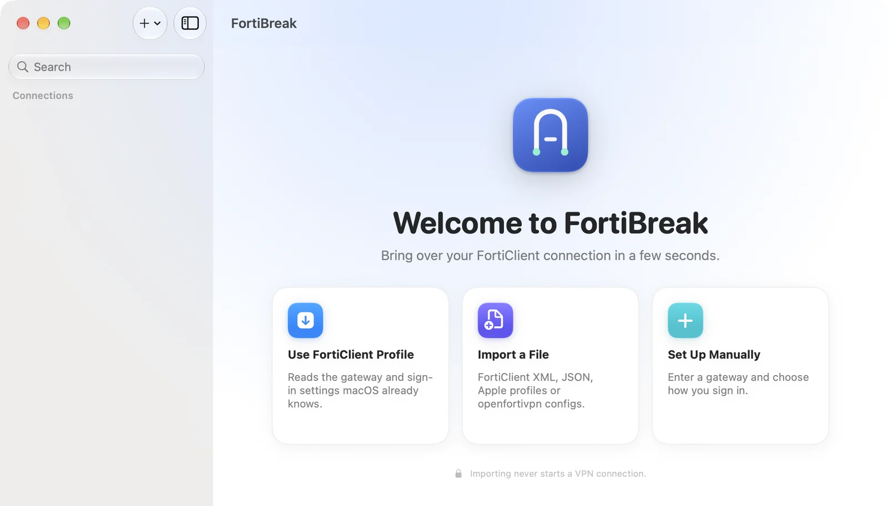
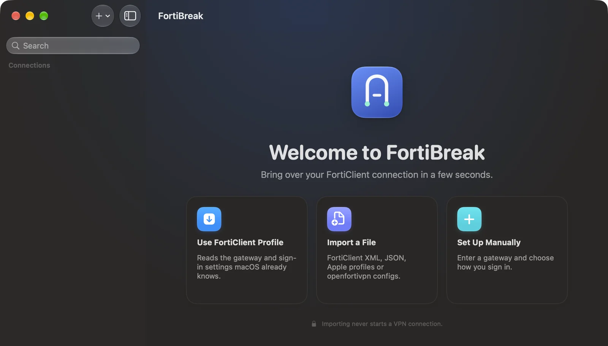
Use FortiClient Profile
Reads the gateway and single sign-on settings macOS already knows from FortiClient. It doesn’t open FortiClient’s protected storage, so you may need to add your username.
Import a File ⌘O
An unencrypted FortiClient XML or JSON export, an Apple configuration profile with a managed VPN payload, or an openfortivpn config. You review every profile before you click Import.
Set Up Manually ⌘N
Enter the gateway host and port (usually 443), a realm if you have one, how you sign in, and your username.
To add more later, use the + menu at the top of the sidebar.
What doesn’t transfer
- Encrypted exports can’t be read, and encrypted Fortinet passwords don’t carry over. Type the password when you connect.
- Certificates embedded in a profile don’t transfer. Point to PEM files in Connection settings instead.
- Plain-text passwords in a file are thrown away unless you turn on Store imported passwords in Keychain.
- IPsec profiles import so you can review them, but they’re marked Import only and can’t connect.
Pick a favorite
Click the star in the toolbar, or right-click a connection and choose Add to Favorites. Your favorite is the starred connection, or your only one, and it sorts to the top. It’s the one FortiBreak connects when it opens, when you press the global shortcut, open a fortibreak://connect link, or join untrusted Wi-Fi.
Connect
Select a connection in the sidebar and click the big power button, or press ⌘K. Click it again to disconnect.
From the menu bar
Flip the switch at the top of the FortiBreak panel, or click a connection in its list.
From any app
⌃⌥⌘V connects your favorite, or disconnects whatever is active.
From a link
fortibreak://connect works from Shortcuts, Raycast or a script.
On its own
When FortiBreak opens (your favorite, by default), or when you join Wi-Fi you don’t trust.
One connection can be active at a time. To switch, disconnect first.
Read the power button
The button, the glow behind it and the title underneath always agree. Each state has its own color.
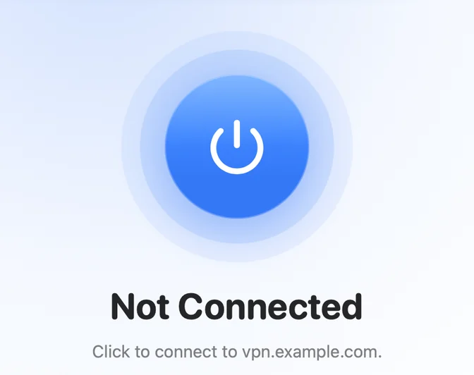
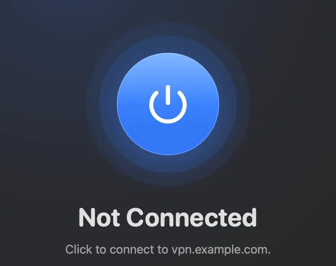
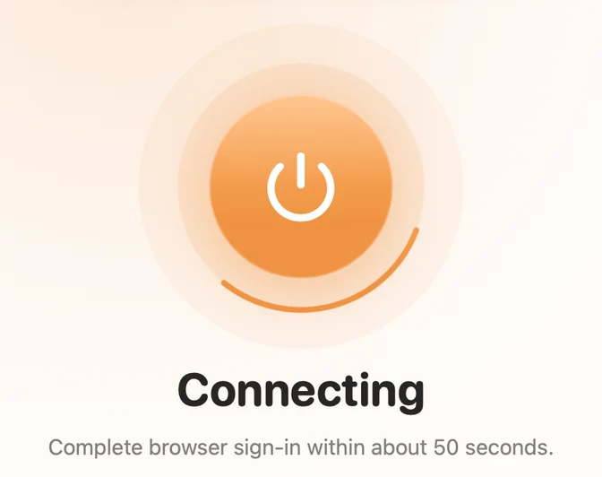
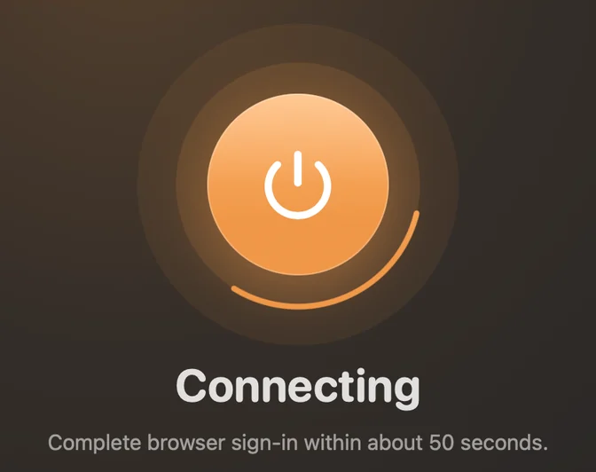
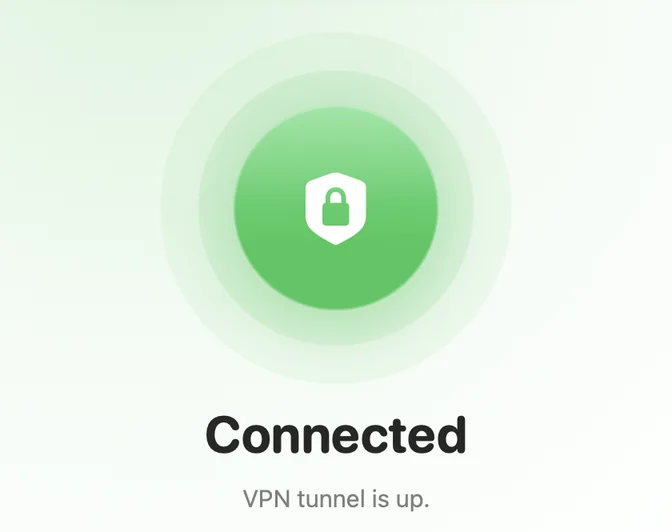
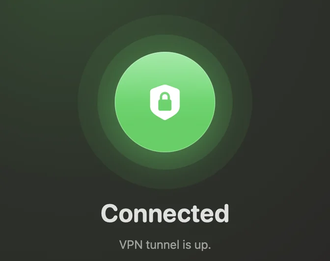
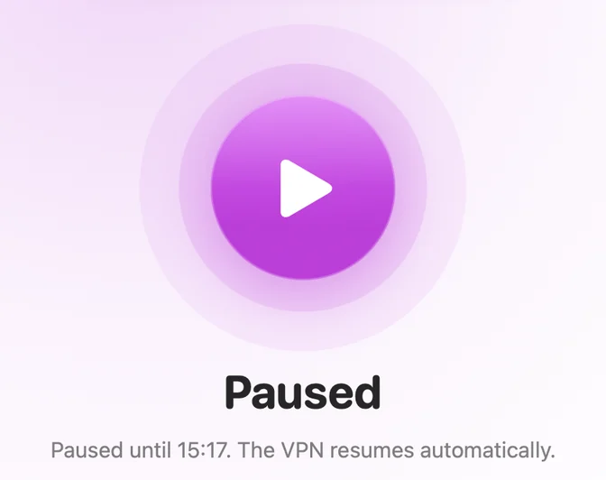
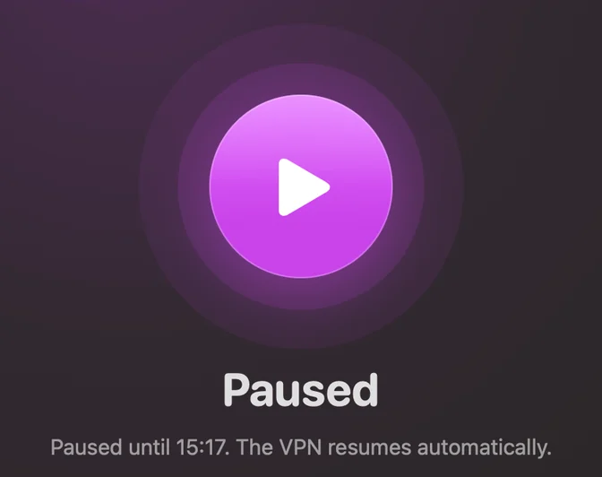
- Couldn’t Connect. The line under the title says why. The Activity log has the details.
- Gray. Not available yet: approve the VPN helper, disconnect the other connection, or this is an IPsec profile.
Sign in
Each connection uses one of two sign-in methods. You choose it in Connection settings.
Password & MFA
Type your password in the Sign In card and click the power button. Turn on Save password in Keychain to skip typing it next time; then leave the field empty and FortiBreak uses the saved one.
If your gateway asks for a one-time code, a Verification card shows the gateway’s question. Type the code and press Continue. If FortiBreak is in the background, a notification tells you it needs you.
Browser SSO
FortiBreak opens your company’s sign-in page in your default browser. If the page asks you to log in, finish within about 50 seconds. When sign-in completes, FortiBreak switches you back to the app you were using. If your browser still remembers your login, that takes about a second.
Timed out? Press Connect again. Don’t reuse an old sign-in tab or callback link; each attempt gets a fresh one.
Chrome comes to the front for a moment, because it brings itself forward whenever it opens a link.
Everyday use
While you’re connected
The row of chips under the button shows tunnel health, session time, your VPN address, and download and upload speed. Below them, cards fill in with live details.
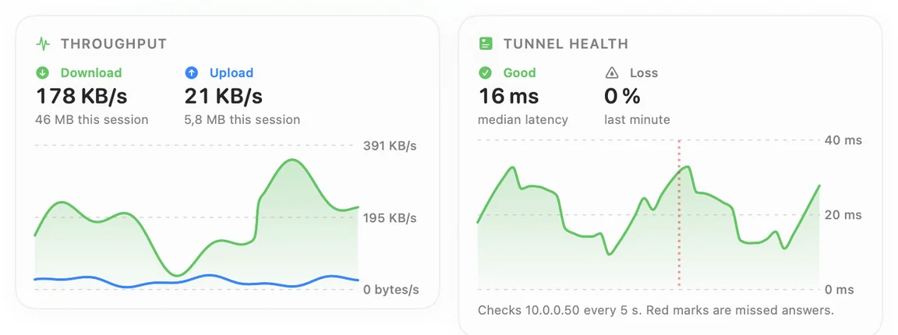
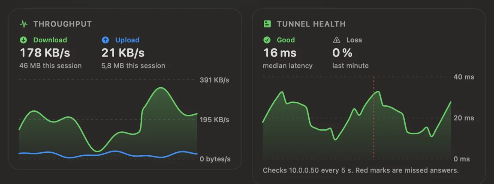
- Throughput
- Current download and upload speed, totals for this session, and a chart of recent minutes.
- Tunnel Health
- Median latency, the share of missed checks in the last minute, and a chart. Red dashed lines mark missed answers.
- Session
- How long you’ve been connected, since when, and when the gateway is expected to end the session.
- VPN Address
- Your address inside the company network, and the tunnel interface, such as
ppp0. - Gateway, Sign-in
- Where you’re connected and how you signed in.
Tunnel health
Every 5 seconds FortiBreak checks the DNS server your gateway assigned. To check a different host, set Health check host in Connection settings, as host or host:port.
Median latency up to 250 ms, and no more than 15% of checks missed.
Median above 250 ms, or more than 15% of checks missed in the last minute.
The last two checks got no answer.
No answer for about 20 seconds. With automatic reconnect on, FortiBreak restarts the tunnel.
With automatic reconnect off, FortiBreak only notifies you that the tunnel looks stalled. No check means there is no host to check.
Session limit
Many gateways end every session after a fixed time, often 8 or 12 hours. FortiBreak learns that limit when your sessions drop at the same length, or you set it for each connection. Ten minutes before the end, a banner appears:
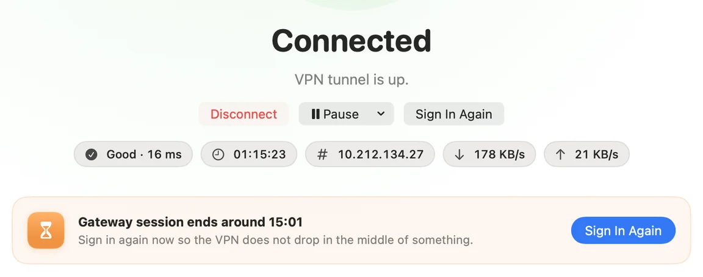
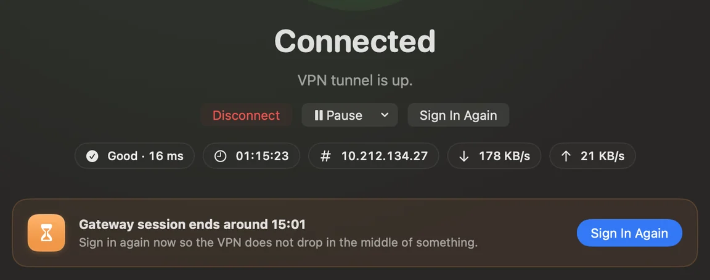
Click Sign In Again to start a fresh session when it suits you, instead of losing the VPN in the middle of something. The expected end time also shows on the Session card and in the menu bar panel.
Pause and reconnect
Pause
Click Pause and choose 15 minutes, 30 minutes, 1 hour or 2 hours. FortiBreak disconnects now and reconnects when the time is up, waiting for a network if you’re offline. While paused, Resume Now reconnects early and Stay Off cancels the timer. A link can pause for any time from 1 to 480 minutes.
Automatic reconnect
If the tunnel drops without you pressing Disconnect, FortiBreak tries again up to three times:
Drawn to scale. If the third attempt fails, FortiBreak stops and notifies you.
- Before each attempt it waits until your Mac has a network.
- Browser SSO connections may open a sign-in tab while reconnecting.
- A sign-in that fails the first time, like a wrong password or a cancelled browser login, is never retried.
- Press Cancel Reconnect (⌘K) to stop a pending attempt.
- Turn reconnecting off in Settings › General, or with the Reconnect automatically switch in the menu bar panel.
Network
The Network tab shows what the gateway gave you while you’re connected, and lets you test whether a host answers through the VPN.
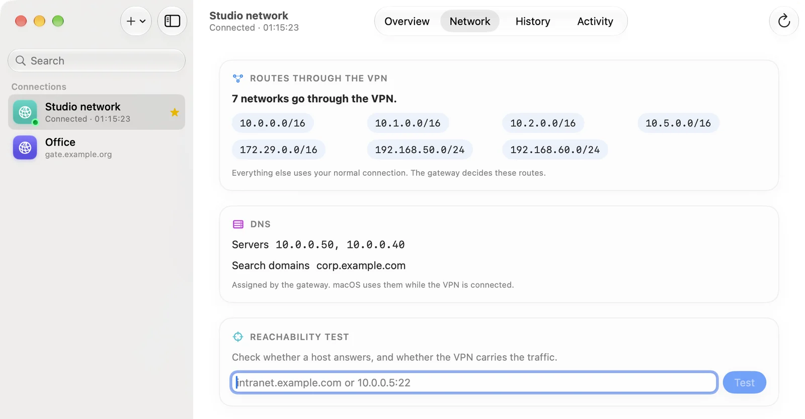
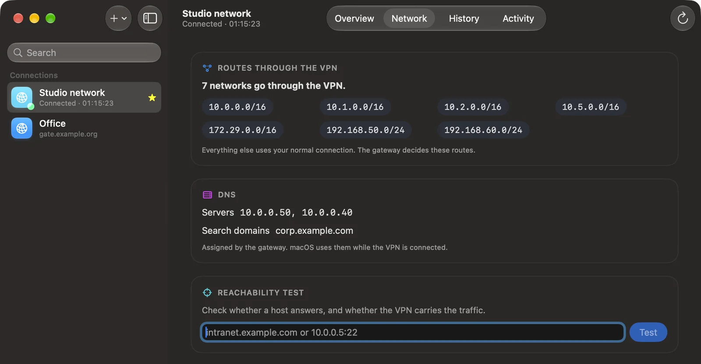
- Routes Through the VPN
- The networks that go through the tunnel. Everything else uses your normal connection. If the gateway sends all traffic through the VPN, it says so. Refresh reads the routing table again.
- DNS
- The DNS servers and search domains the gateway assigned. macOS uses them while you’re connected.
- Reachability Test
- Type a host or
host:portand click Test. Without a port it tries 443.
What the test results mean:
- ✓
Answered in 24 ms through the VPN (ppp0)
It works, and the traffic goes through the tunnel. - ✓
Answered in 9 ms outside the VPN (en0)
The host answers, but not through the VPN. The gateway doesn’t route that network to you. - !
Reachable in 31 ms, but port 22 is closed
The host is there, but nothing is listening on that port. - ✕
No answer on port 443 · Could not resolve this name
The host doesn’t answer, or its name isn’t known to DNS.
History
The History tab adds up the last seven days for the selected connection.
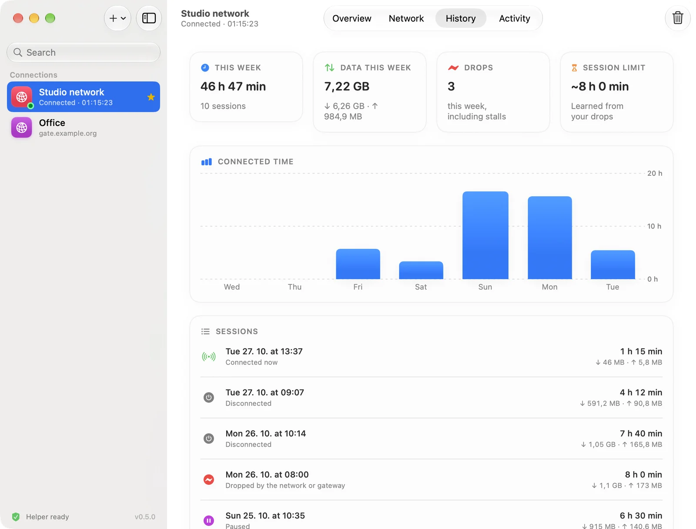
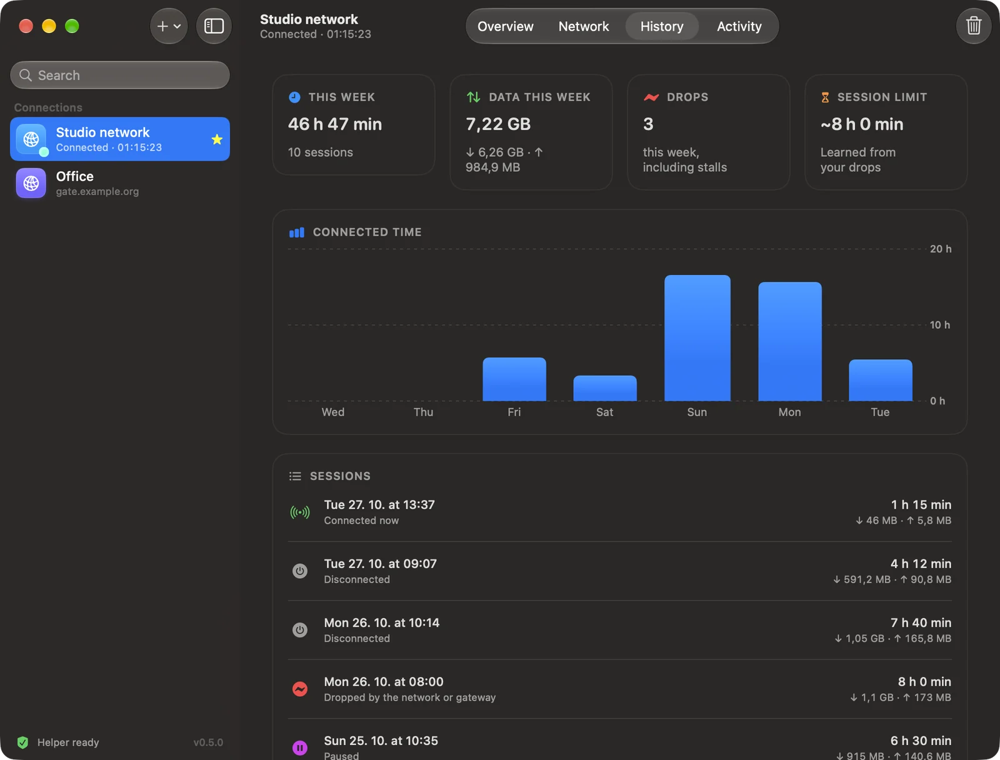
At the top: connected time, data used, drops (stalls included) and the gateway’s session limit, whether learned or set by you. A bar chart shows hours connected per day. Each session in the list shows when it started, how long it lasted, the data used and how it ended:
- Connected now
- Disconnected
- Dropped by the network or gateway
- Restarted after a stall
- Paused
- Signed in again
Clear History in the toolbar removes past sessions for every connection and forgets any learned session limit.
Activity log
Press ⌘L or choose the Activity tab for a step-by-step log of the latest session, including snapshots of your network before and after connecting.
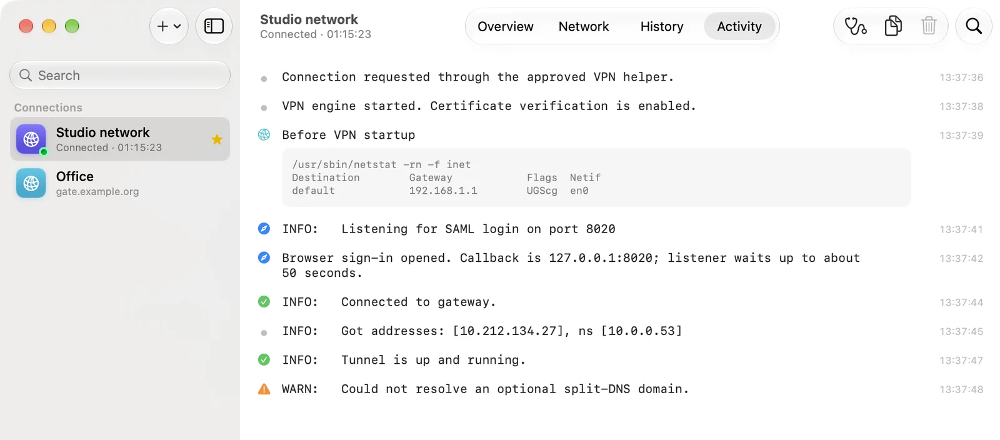
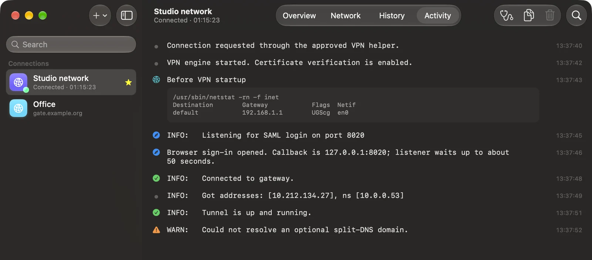
- Filter
- Type in the search field to show only matching events.
- Check Network
- Records your Mac’s current routes and DNS servers in the log. It contacts no outside service.
- Copy
- Copies the events shown, ready to send to your IT team.
- Clear
- Empties the log. Not available while connected.
Passwords and session tokens are removed from the log, and it’s kept after you quit. It does include local addresses, DNS servers and routes, so read it before you share it.
Make it yours
Keyboard shortcuts
| Keys | Does |
|---|---|
| ⌘K | Connect or disconnect the selected connection. Also cancels a pending reconnect. |
| ⌘L | Show the Activity log. |
| ⌘N | New connection. |
| ⌘O | Import VPN profiles. |
| ⌘, | Settings. |
| ⌃⌥⌘V | Works in any app. Connects your favorite, or disconnects whatever is active, with a small confirmation on screen. Switch to ⌃⌥V or ⌃⌥⌘K, or turn it off, in Settings › Shortcuts. |
Links
fortibreak:// links let the Shortcuts app (with Open URLs), Raycast, a bookmark or a script control the VPN.
| Link | Does |
|---|---|
fortibreak://connect | Connect your favorite. |
fortibreak://connect?profile=Office | Connect a connection by name. Write spaces as %20. |
fortibreak://disconnect | Disconnect, or cancel a pause or reconnect. |
fortibreak://toggle | Connect or disconnect. |
fortibreak://pause?minutes=30 | Pause for 1 to 480 minutes. |
fortibreak://resume | End a pause now. |
fortibreak://open | Show the FortiBreak window. |
From Terminal:
open "fortibreak://toggle"Browsers ask before opening these links. To turn links off, clear Allow fortibreak:// links in Settings › Shortcuts.
After connecting
Each connection can open links and run a script once the tunnel is up. Set them up in Connection settings, under After Connecting.
- Open link
- Web pages (
https://), file shares (smb://,afp://,nfs://) and remote sessions (ssh://,vnc://,rdp://). - Run script
- A zsh script that runs as you, about two seconds after connecting. It must be a file you own that nobody else can change. It gets up to 2 minutes, and its output appears in the Activity log.
- Also after automatic reconnects
- Off by default, so actions run only when you connect yourself.
The script receives these environment variables:
| Variable | Value |
|---|---|
FORTIBREAK_CONNECTION | The connection’s name |
FORTIBREAK_GATEWAY | The gateway host |
FORTIBREAK_VPN_ADDRESS | Your address inside the VPN |
FORTIBREAK_INTERFACE | The tunnel interface, such as ppp0 |
# ~/Scripts/on-vpn.sh — mount the team share and note the address
open "smb://files.example.com/team"
echo "$(date) $FORTIBREAK_CONNECTION $FORTIBREAK_VPN_ADDRESS" >> ~/vpn-log.txtWi-Fi rules
Connect automatically on networks you don’t trust, like cafés and hotels, and stay off at home or in the office.
In Settings › Wi-Fi:
- Turn on Connect automatically on untrusted Wi-Fi and pick the connection. Your favorite is the default.
- Add trusted networks by name, or click Trust “name” for the network you’re on. Names must match exactly.
- To drop the VPN when you get there, turn on Disconnect when I join a trusted network.
Wired and unknown networks are left alone. If you disconnect by hand, FortiBreak waits until you change networks before acting again.
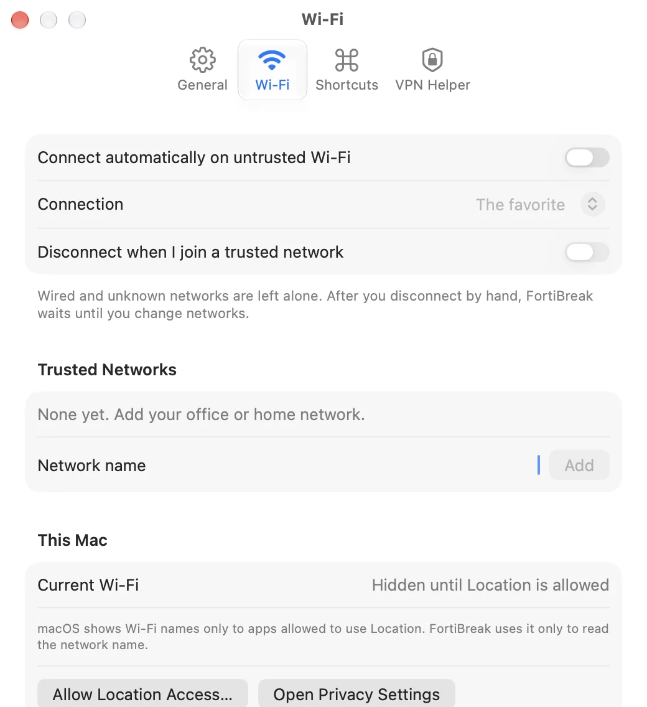
macOS reveals Wi-Fi names only to apps with Location access, so FortiBreak asks for it. It uses Location only to read the network name. Use Allow Location Access… or Open Privacy Settings on the same tab.
Settings
Open Settings with ⌘, or the gear in the menu bar panel. The Wi-Fi tab is described above.
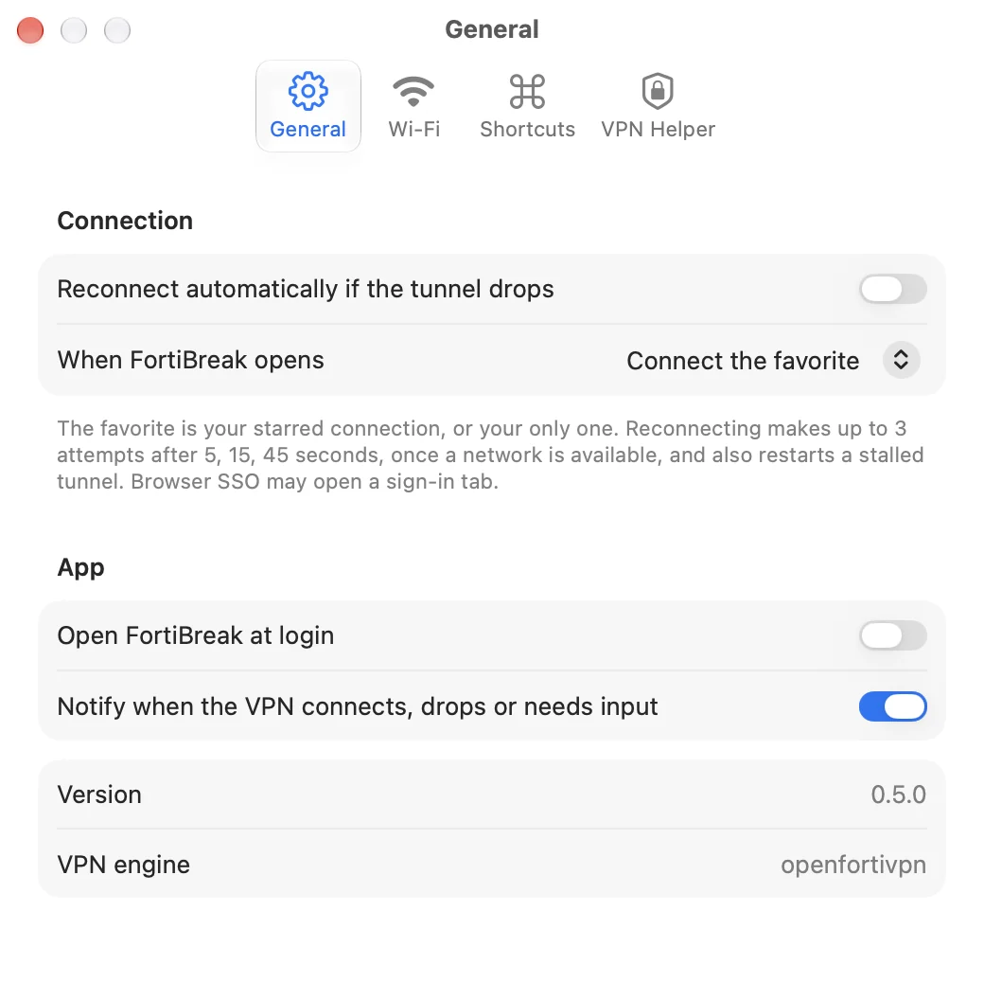
General
- Reconnect automatically if the tunnel drops. On by default.
- When FortiBreak opens: don’t connect, connect the favorite (default), or a specific connection.
- Open FortiBreak at login. macOS may ask you to allow it in System Settings › General › Login Items.
- Notifications, the app version and the VPN engine.
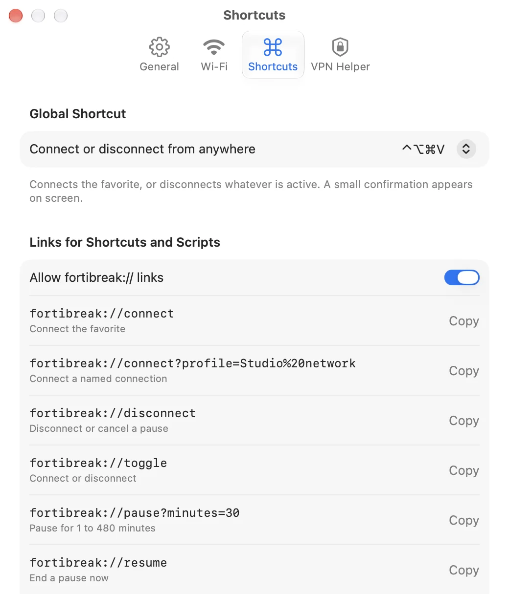
Shortcuts
- The global shortcut: ⌃⌥⌘V, ⌃⌥V, ⌃⌥⌘K or off.
- Allow fortibreak:// links, with each link ready to copy.
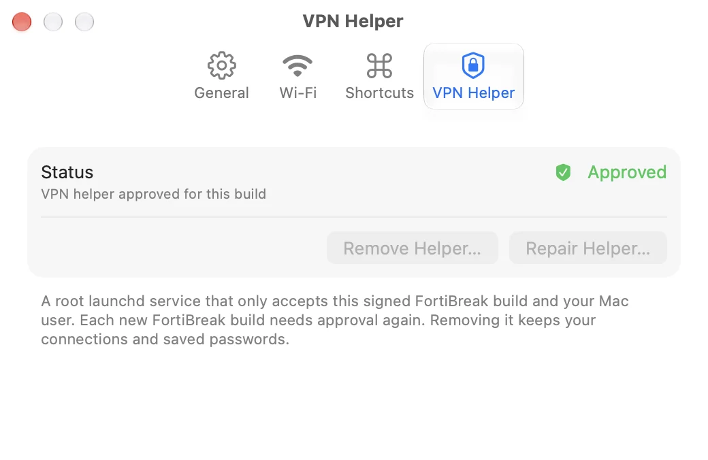
VPN Helper
- Status: Approved, Needs approval or Not installed.
- Approve Helper… or Repair Helper… asks macOS for your password once.
- Remove Helper… uninstalls it. Your connections and passwords stay.
Connection settings
Select a connection and click the sliders button in the toolbar, or right-click it and choose Edit…. You can’t edit while connected.
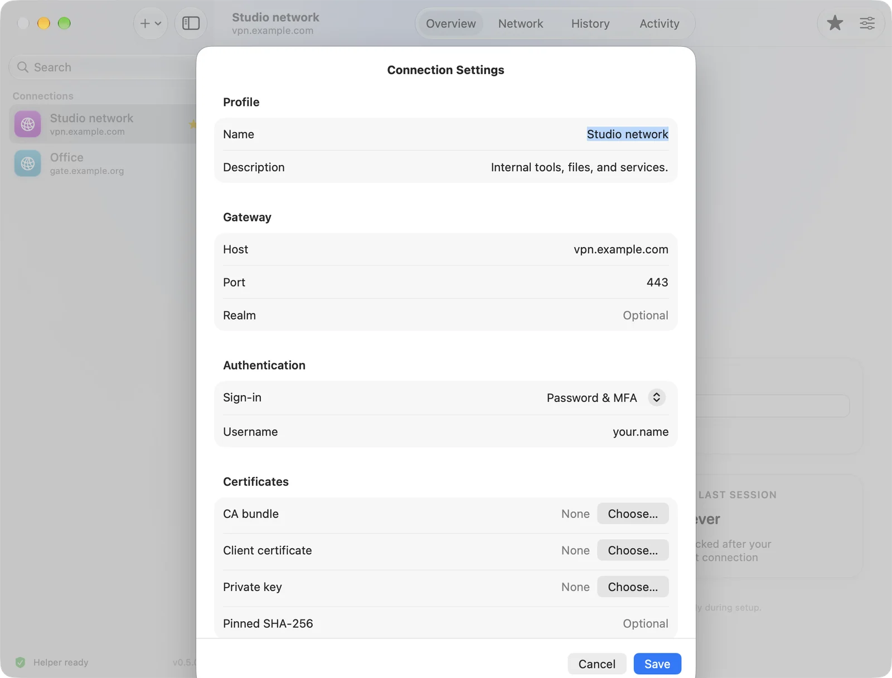
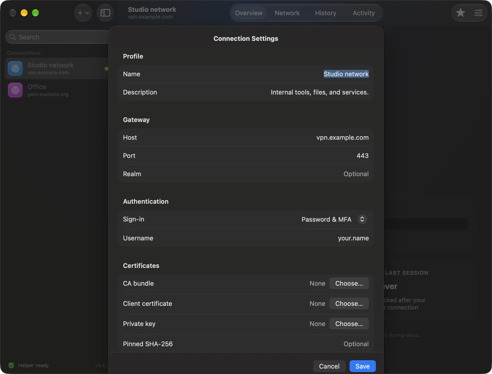
| Section | Fields | Notes |
|---|---|---|
| Profile | Name, Description | The name shows in the sidebar, the menu bar and notifications. |
| Gateway | Host, Port, Realm | Port is usually 443. Fill in Realm only if your IT team gave you one. |
| Authentication | Sign-in, Username | Password & MFA or Browser SSO. Password & MFA needs a username. |
| Certificates | CA bundle, Client certificate, Private key, Pinned SHA-256 | PEM files. Normal certificate checks stay on. Pin a fingerprint only if you got it through a trusted channel. |
| Monitoring | Health check host, Session limit warning | host or host:port. Session limit: learn from drops (default), off, or after 4, 8, 10, 12 or 24 hours. |
| After Connecting | Open link, Run script, Also after automatic reconnects | See After connecting. |
To delete a connection, right-click it and choose Delete…. Its saved password is removed too. FortiClient is unaffected.
Reference
Privacy and safety
How the VPN helper works
Starting a VPN needs administrator rights. Rather than asking for your password every time you connect, FortiBreak installs a small helper once, with your approval.
- The helper only accepts the FortiBreak build you approved, running as your Mac user. That’s why each update needs approval again.
- It can only start the bundled VPN engine, with a fixed list of settings. It runs no shell and no other programs.
- It starts when your Mac starts and waits. It never connects a VPN on its own at startup or login.
- Disconnecting or quitting FortiBreak stops the VPN engine.
- Setup copies its files out of the signed app and checks each one against a recorded fingerprint. No sudoers rule is added.
Your data
| What | Where |
|---|---|
| Connections | ~/Library/Application Support/FortiBreak/profiles.json, readable only by you |
| Saved passwords, if you choose | Your Keychain, service eu.local.fortibreak.vpn |
| Latest session log | ~/Library/Application Support/FortiBreak/last-session.json, readable only by you |
| Settings | ~/Library/Preferences/eu.local.fortibreak.plist |
| VPN helper | /Library/PrivilegedHelperTools/eu.local.fortibreak/ and /Library/LaunchDaemons/eu.local.fortibreak.vpn-helper.plist |
Passwords and codes travel over private connections inside your Mac. They never appear in the connections file or in the list of running processes. FortiBreak doesn’t contact outside services to test your connection on its own.
Troubleshooting
macOS says FortiBreak can’t be opened or is damaged
Run the quarantine command from Install, then open the app again.
The power button is gray
The VPN helper needs approval: click Enable… or Approve… in the banner. The button is also gray while another connection is active, and for IPsec profiles, which are import only.
Every update asks me to approve the helper again
That’s expected. The helper trusts one exact build of FortiBreak, so each new version needs one approval.
Browser sign-in timed out
Press Connect again and finish signing in within about 50 seconds. Don’t go back to an old sign-in tab.
My browser stays in front after SSO
If the browser asked you to sign in, it stays in front until you finish; then FortiBreak brings back the app you were using. Chrome also comes forward for a moment whenever it opens a link.
It says “Couldn’t Connect”
Read the line under the title, then open the Activity log (⌘L). Make sure FortiClient is disconnected. If you need help, use Copy and send the log to your IT team after reading it through.
A site doesn’t load over the VPN
Run the Reachability Test on the Network tab. If the host answers outside the VPN, the gateway doesn’t route that network to you, so ask your IT team. If the name can’t be resolved, compare the DNS servers and search domains on the same tab.
Health says Stalled, or the tunnel keeps restarting
Your connection may be losing packets. If the gateway’s DNS server simply doesn’t answer checks, set a Health check host that does, such as an internal server’s host:port, in Connection settings.
The VPN drops at the same time every day
Your gateway has a session limit. FortiBreak learns it after a couple of drops at the same length, or you can set it in Connection settings. Use Sign In Again when the warning appears.
Wi-Fi rules don’t recognize my network
Allow Location access on the Wi-Fi tab of Settings, and check that the trusted name matches the network name exactly.
Open at login keeps turning off
Allow FortiBreak in System Settings › General › Login Items.
Settings shows “VPN engine: Missing from this build”
Download FortiBreak again and replace the app.
What FortiBreak doesn’t do
- Connect IPsec profiles. They import for review only.
- EMS, ZTNA or endpoint compliance checks.
- DTLS acceleration.
- A kill switch that blocks traffic while the VPN is down.
- Read encrypted FortiClient exports or encrypted passwords.
- Match every FortiClient feature.
When the gateway sends all traffic through the VPN, FortiBreak adds two routes that together cover every address, instead of replacing your normal default route. macOS manages VPN DNS. Split routes from the gateway are honored.
Remove FortiBreak
Delete your connections in FortiBreak. That removes their saved passwords from your Keychain.
Remove the helper. Open Settings › VPN Helper, click Remove Helper… and approve the macOS prompt. Disconnect first; it won’t remove the helper while a VPN is running.
Quit FortiBreak and move it to the Trash.
If you can’t open the app any more, make sure it isn’t running, then remove the helper in Terminal:
sudo /bin/launchctl bootout system/eu.local.fortibreak.vpn-helper
sudo /bin/rm /Library/LaunchDaemons/eu.local.fortibreak.vpn-helper.plist
sudo /bin/rm -rf /Library/PrivilegedHelperTools/eu.local.fortibreak
sudo /bin/rm -f /Library/PrivilegedHelperTools/eu.local.fortibreak.session.lock
sudo /bin/rm -f /var/run/eu.local.fortibreak.sockMoving only the app to the Trash leaves the helper, your connections file and saved Keychain items behind.